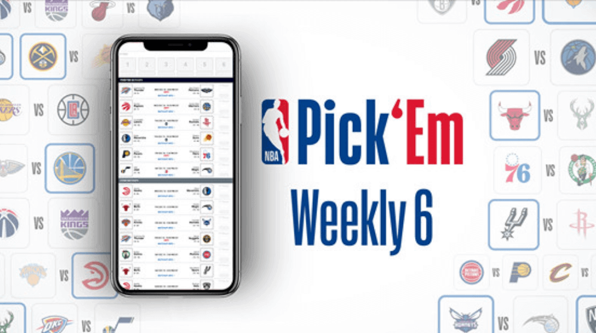
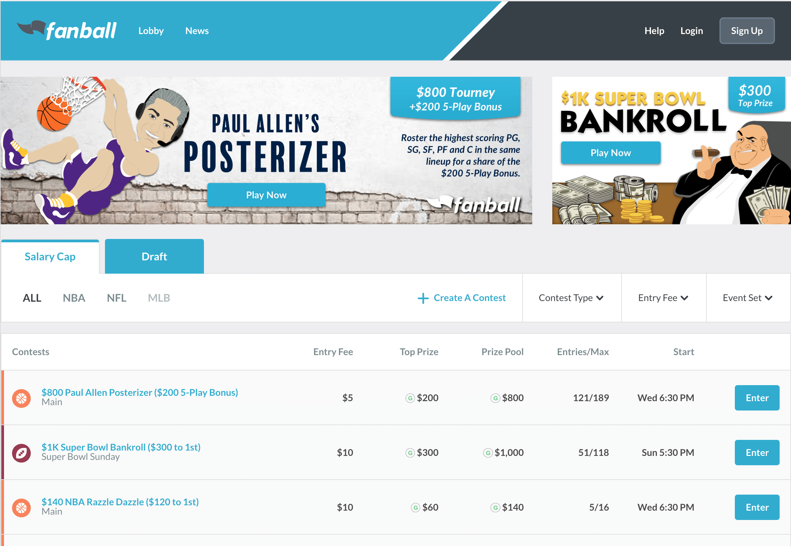

Work + Life
Strategic. Collaborative. Creative.
These words summarize my work style. I am a huge fan of collaboration, problem solving, and being immersed in the new and the complex.
Technologies
Learning and playing with new tech is a constant. But at the moment, these are the technologies I have spent most time with:
- JavaScript
- ReactJS
- Redux
- Apollo GraphQL
- RESTful APIs
- Node.js
- CSS
- Sass
- Styled Components
- Storybook (a Jest + Enzyme Framework)
My Work

Working on NBA projects, I was part of a remote agile team.

I was a front-end leaning full stack junior dev on Fanball, a daily fantasy sports app.